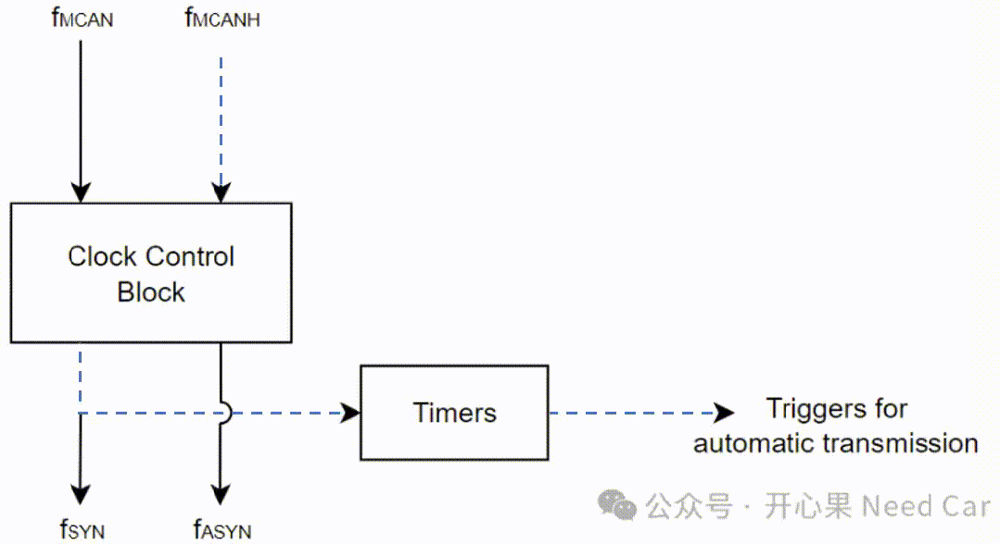
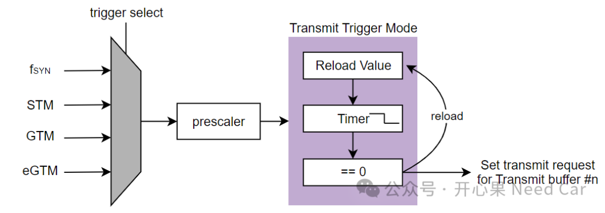
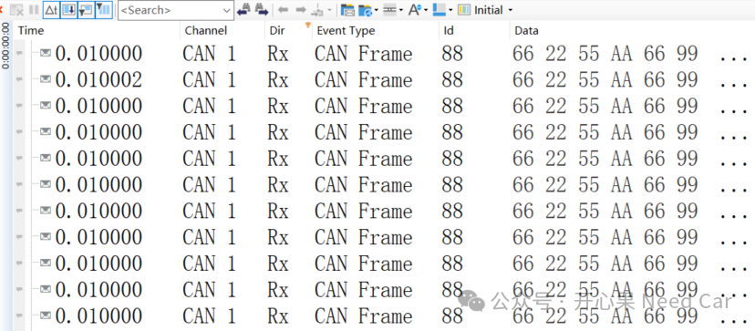
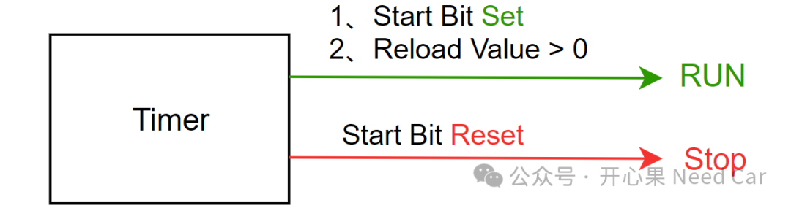

最近在研究英飞凌TC4xx的片子，想看看这块28nm制程的片子能给我们带来什么惊喜，玩一玩它的新特性。本文先给大家介绍最容易上手的CAN模块，看看最新的TC4xx CAN模块带来了哪些新特性，以及这些新特性能否辅助解决一些工程问题。对于TC4xx的CAN模块，确实新增了一些功能，当然，这都是针对车规级MCU芯片而言。其实，不少新特性早已在SOC的芯片中得以运用，eg：硬件路由模块（DRE，Data Routing Engine），实现Ethernet<->CAN、CAN<->CAN、CAN/Ethernet<->Memory信息路由。而CAN模块中，增加了CRE（CAN Routing Engine），就是专门用于路由CAN报文的加速引擎。这些特性我们后面讨论，本文先聊一聊CAN的定时功能，即：脱离CPU干预，周期性发送指定邮箱内数据。在以往的CAN报文发送中，我们知道：每帧CAN报文的发送需要CPU主动请求，即：设置请求发送标志位。而在TC4xx的CAN模块中，新增了定时功能（Timing functions），也就是专属于CAN模块的Timers，由这些Timers代替CPU请求报文发送，示意如下：

如上图，Timers由fSYN驱动，而fSYN可以进一步通过分频fMCANH的输入时钟得到目标驱动频率。除了CAN模块的fSYN驱动Timers以外，还可以使用其他外设作为驱动源，eg：STM（System Timer）、GTM（General Timer Module）以及eGTM（Enhanced General Timer Module），示意如下：
注意：STM、GTM、eGTM需要触发事件使能，而fSYN只需要做好分频即可。当然，除了可以设置周期发送Timer，还可以设置接收超时Timer。
如果使用fSYN作为触发源，默认输入频率250MHz，如此高的主频无法设置大的发送周期。因此，可以提前对fMCANH进行分频处理，本文将fMCANH分频到50MHz，作为fSYN的输入频率，之后再对fSYN进一步分频（分频系数10），得到5MHz的频率。同时，重载值设置为50000，预期获取到10ms周期发送的报文。
如上图，发送精度达到了us级别，周期依然没有太大波动，波动幅度也就是几个us，对于通信周期要求严苛的实时系统，该功能确实比较适合。
Timer的使能和关闭也比较简单。使能时，置位Start标志位，同时，重载值＞0；关闭时，复位Start标志位即可，示意如下：

当然，还可以在运行的过程中，动态改变报文的运行周期（10ms->12ms），示意如下：
工程中，我们常常碰到这样的场景：周期发送的CAN报文存在“抖动”，比如：10ms的周期报文，有时偏差可能超过10%。这对实时性要求严苛的系统来说，确实难以接受。所以，如果使用上述方案，可有效缓解发送抖动的问题。但是，并不是说这个新特性没有槽点，个人看法：每个Node仅有3个发送Timer，且每个Timer触发的Buffer固定，eg：Timer0只能触发Buffer 1。所以，面对周期性报文多的控制器，这个特性有点施展不开。而且，CRE的路由是帧（Frame）级别的路由，无法做到Signal的路由，如果要实现Signal的路由，只能将信息送到COM模块，进行信号的拆分、重新组包及路由。点击下方关注，一起聊聊Autosar/嵌入式，如果需要，联系作者进群，给你更专业的解答